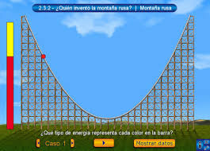

ACTIVIDAD DE GEOGEBRA
INICIO: 10 minutos
La Montaña Rusa Matemática
Se da la bienvenida a los alumnos en general a la nueva clase y se les menciona el propósito de esta, posteriormente se les presenta un video que durará 2:00 minutos aproximadamente
Después de la visualización del video se realiza las siguientes preguntas a los estudiantes:
- ¿Qué creen que representa la pendiente de la montaña rusa en cada punto?

- ¿Cómo podríamos describir matemáticamente la inclinación de la montaña rusa en un punto específico?Después de escuchar las respuestas de los estudiantes se da la aclaración y explicación de que la pendiente de una montaña rusa en un punto dado es similar a la pendiente de una recta tangente a una curva en un punto específico.
Obra publicada con Licencia Creative Commons Reconocimiento Compartir igual 4.0